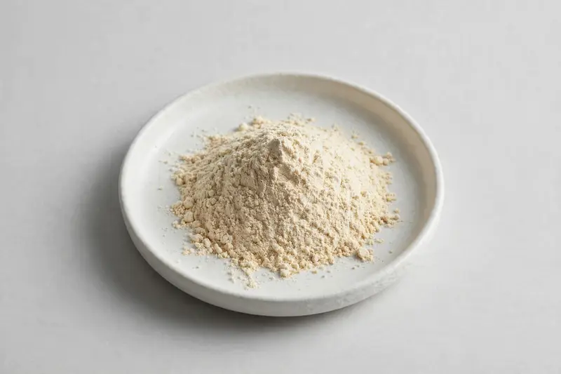

Fava bean protein — seed-derived protein for sports-nutrition formats.

Overview
Fava bean protein powder is produced from the seed of Vicia faba and has moved quickly into the mainstream of plant-protein sourcing, driven by the wider bioactive peptide trend in sports nutrition. Buyers commonly request protein levels between 60% and 90%, with additional interest in peptide fractions and declared amino acid profiles. As a Xi'an-based trading company sourcing through vetted partner producers, we review your required protein content, peptide specification and format, and confirm feasibility without overstating what a given producer can deliver.
Specifications below reflect commonly requested options in the market — not a stock list. Share your target spec and we'll confirm exactly what we can supply, honestly.
| Specification | Details |
|---|---|
| Botanical identity | Fava bean seed protein powder (Vicia faba) |
| Source material | Seed |
| Marker compound | Commonly requested spec grades: protein 60-90% (as-is basis), with optional peptide or amino acid profile specifications agreed with the buyer. |
| Appearance | Pale beige to light tan fine powder |
| Mesh size | Typically 80–100 mesh (confirm per inquiry) |
| Testing | COA/TDS arranged on request; scope agreed per your spec |
Applications
Documentation
We don't claim in-house labs or certifications we don't hold. COA and TDS documents can be arranged on request, and testing scope is agreed against your specification before supply.
FAQ
Related products
Diosmin (citrus-derived flavonoid)
Key marker: Diosmin 90%+
View specs →Phaseolus vulgaris
Key marker: Phaseolamin 1-2%
View specs →Morus alba
Key marker: DNJ 1%
View specs →Eschscholzia californica
Key marker: 4:1 to 10:1 ratio
View specs →Monascus purpureus
Key marker: Monacolin K 0.4-3%
View specs →Buyer guides
Buyer’s guide
Identity, actives, heavy metals, micro — what each section of a Certificate of Analysis means, and the red flags that tell you to walk away.
Read the guide →Buyer’s guide
Section-by-section COA walkthrough — marker assays, heavy metals, micro panels, red flags, and a buyer checklist.
Read the guide →Send your target spec and volumes — we'll respond with a tailored quotation.
Request a Quote